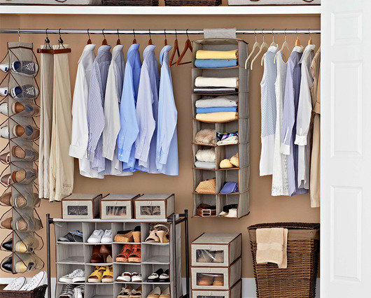

Chava's Site
Strength Profile
Organizer
An organizer is someone who has everything in order. People can count on you to have the details ready and put a plan together for a project or any situation. The planing you do and scheduling make you feel comfortable and makes you feel ahead of everything and in life.
I see organizer in my life because I love having everything ready to go. No I'm not always organized their, but I try my best. I also write things down to not forget, then people rely on me to help them I do not mind sometimes. In school I use it by keeping everything in its subjects and have everything in time.
How it feels to be organized well I am not sure. I mean when I organize stuff I feel good about it because nothing will go according to plan and move smoothly. Like a school project if it is due in one week then just make parts and assign them days to finish so it can be on time. Also like at home if everything is in place, then your room will look spotless.
-
How I can use it :
- school projects
- house clean
- help others
Achieving
I say a achiever is a person who has goals in life and is ready to accomplish it. Once they accomplish that goals they feel jubilant. You have list of things to do and even if the goals is as small as a ant or as big a the universe you will always feel successful. You are a hard worker always feel that you should be doing more.
I see myself as an achiever because when I accomplish things I feel good about myself. Like if I receive a good grade on anything I feel jubilant. I always have a feeling to do things even when I am doing things. I just want to continue and continue never stop reaching goals.
To feel as an achiever is different from everyone. I believe that everyone is an achiever they just have to believe in themselves. When I achieve something I get a feeling in my brain that tell me good job or excellent, but then it also tell me that I need to keep going. There is no stopping once you complete something. An example could be in school once you earn good grades you do not stop you keep going or when I had gotten a camera is just not taking picture or videos it is the experience with different camera or like what I did get into drones.
How I can use it :- do something in life
- expand in my thoughts
- the impossible is possible
- growth mindset
Discoverer
A person whose strength is a discoverer is a person who like to ask questions and a lot of them. Some of the question they can ask is Why?, How?, How does it work?, or even Why did it do that? They explore thing they do not know then they use that knowledge to connect to other ideas and just keep on exploring. It is like you find an idea you enjoy, explore it, connect it to other ideas, and keep exploring.
I see discover in my life because I like to go out there and see what is different and learn from. It just get boring to follow what other people do. My strenght of discoverer made me who I am today an intelligent boy who want to do things unique than other and learn more about the world we live in.
When I discover things or explore the world even if it is through a physical perspective or through the internet I feel whatever I learned is knowledge that can benefit me later on. When I learned that my boss was from India and I went to his house to view a different type of religion and culture I feel like I was being educated something important. Another example can be when on Youtube I searched thing like how does a motor work or how do drone sensor work it is insane what you will discover.
How I can use it :- benefit in the future
- knowledge
- teach others
- growth mindset